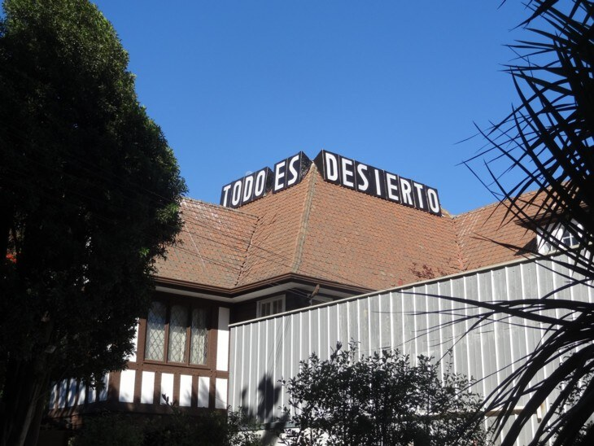
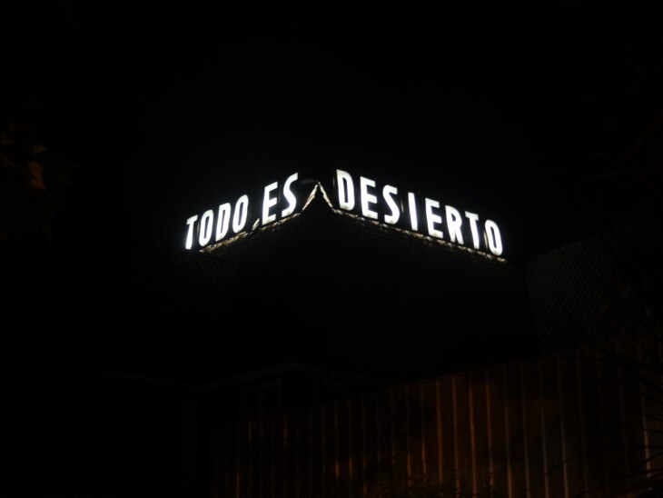
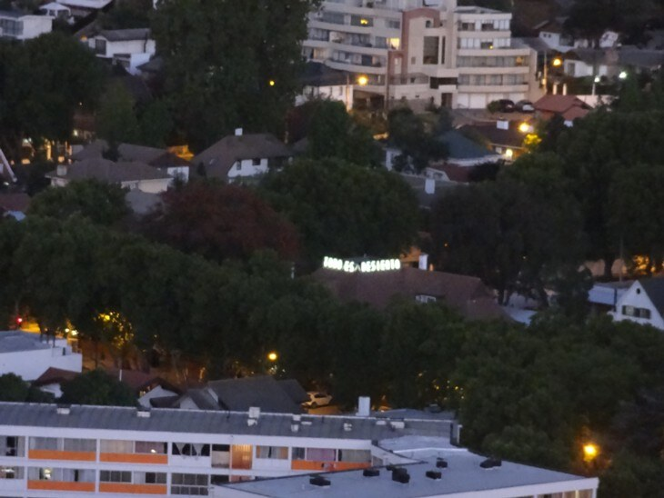
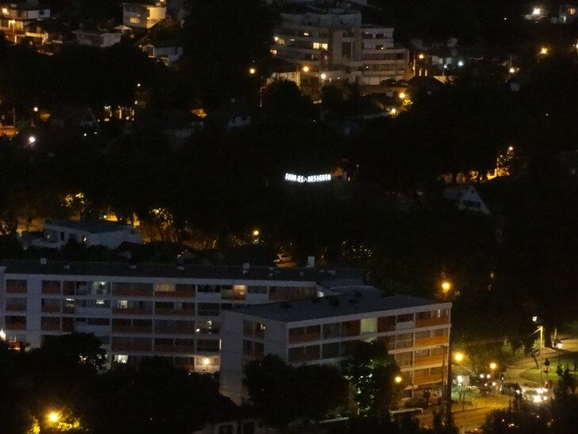
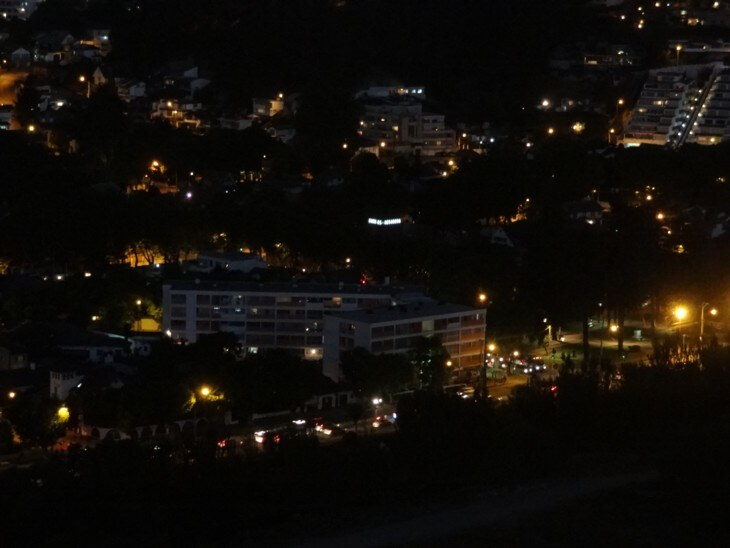
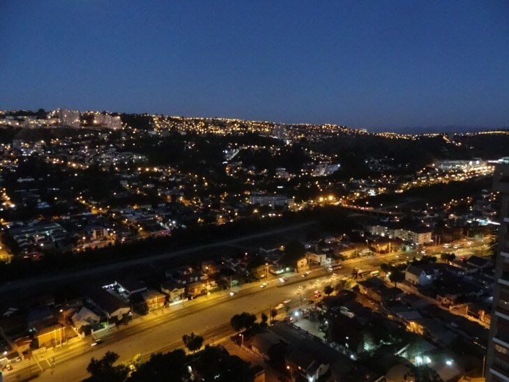

Dossier · Todo es Desierto
Pieza de Paisaje / Todo es Desierto
«Grandes son los desiertos, y todo es desierto.»
— ÁLVARO DE CAMPOS
Instalación del epígrafe de Álvaro de Campos (heterónimo de Fernando Pessoa) como letrero luminoso sobre un techo de tejas, en el Barrio Miraflores de Viña del Mar.






UbicaciónVALPARAÍSO
33°01′S · 71°33′O